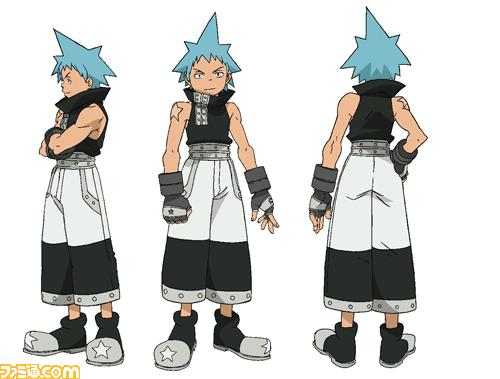

블랙☆스타(Black☆Star)

소울 이터의 주연들 중 한 명. 성우는 애니메이션에서나 드라마 CD에서나 코바야시 유미코. 한국판 성우는 이명희. 북미판 성우는 브리트니 칼보우스키. 이름의 표기는 블랙☆스타로, 가운데에 별이 꼭 들어가야 한다. 보통 '검은 별'이라고 해석하는 사람이 많지만, 정확한 뜻은 '암흑의 세계'.파트너는 다변형 무기인 나카츠카사 츠바키.암살자 집단 가문인 별족 출신이자 일본계. 별족 가문이 강한 힘을 얻기 위해 인간의 영혼까지 손을 댔다가 사무전에 쓸리고 아직 어린 아기였던 블랙 스타를 거둬들였다. 자기 일족을 멸족시킨 사무전에는 나쁜 감정은 가지고 있지 않으며 그런 과거에도 딱히 얽매이지 않는다. 암살자라는 직분에 맞지 않는 성격을 가지고 있다. 예를 들면 암살 대상이 등을 보이고 있으면 조용히 접근해 처리하는 대신 "우하하! 내가 널 암살하러 왔다! 후덜덜 떨고 있어라아아아!!!" 같이 떠들어 대서 암살대상을 놓친다. 단 진지해지면 방심했다곤 하나 미후네에 뒤를 크리티컬로 일격필살을 날린다. 본편 초기엔 레귤러 멤버 중 육감이 아예 없다시피했지만, 아수라 부활 저지 당시에 각성했다.이후로는 사무전 측에서 육감이 가장 뛰어난 덕에 영혼 감지가 못 잡아내는 미션에 주로 나온다.